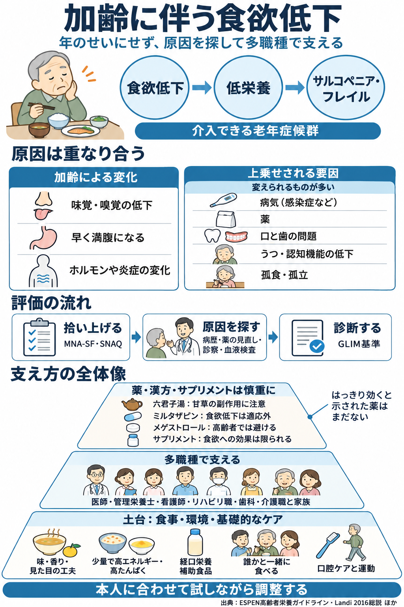

加齢に伴う食欲低下への多面的アプローチ
加齢に伴う食欲低下について、原因の重なり、評価の流れ、多職種での支え方を1枚にまとめた図です。
画像をクリック／タップすると原寸で表示します。

出典と注意
ESPEN高齢者の臨床栄養・水分補給ガイドライン、Landiらの総説（2016年）ほか、記事の参考文献に基づいて作成。一般的な医学情報であり、個々の診療方針は主治医と相談してください。
加齢に伴う食欲低下について、原因の重なり、評価の流れ、多職種での支え方を1枚にまとめた図です。
画像をクリック／タップすると原寸で表示します。

ESPEN高齢者の臨床栄養・水分補給ガイドライン、Landiらの総説（2016年）ほか、記事の参考文献に基づいて作成。一般的な医学情報であり、個々の診療方針は主治医と相談してください。